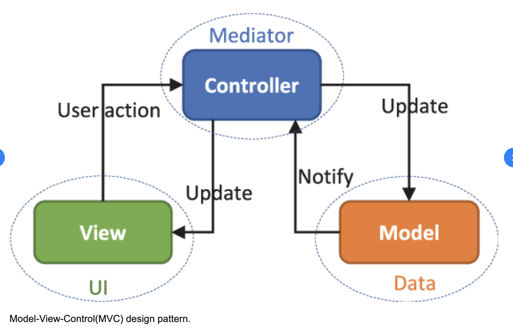

This Todo-App helps a user to generate a list of items/ tasks to be carried out, filter through, and delete list items from the log.
The app also gives the flexibility of marking each Todo Items as either active or completed, and display/filter corresponding Todo Items based on all, active or completed Todo list.
It also has a feature that clears all completed Todos from the list array.
The architecture of the application was built using plain JavaScript which is commonly referred to as Vanilla JavaScript.
The Todo App is built using the Model - View - Controller Architecture design.
The MVC pattern is a software design pattern commonly used for developing user interfaces that divides the related program logic into three interconnected elements. This pattern is used to separate application's concerns.
Model, View and the Controller are separate entities. The Controller serves as the intermidiary between the Model and the View, thereby making it the only entity that can interact with the both. See the picture below for more information.
The Todo App is made up of the following structure, which are:
Bug which not allows adding new todos to the list (simple typo bug).
bug:
Controller.prototype.adddItem
Solved:
Controller.prototype.addItem
Bug which may leads to potential conflict between duplicate IDs
bug:
for (var i = 0; i < 6; i++) {
newId +=charset.charAt(Math.floor(Math.random() * charset.length));
}
Solved:
var isUnique = false;
while (!isUnique){
for (var i = 0; i < 6; i++) {
newId +=charset.charAt(Math.floor(Math.random() * charset.length));
}
isUnique=true;
for(var i = 0; i < todos.length; i++){
if (todos[i].id == newId){
isUnique = false;
}
}
}
Missing id in input tag for toggle-all label which prevent toggle all todos to work properly.
Bug:
Fixed:
Console log displayed message when user delete todo (unnessesary code and console log).
items.forEach(function(item) {
if (item.id === id) {
console.log("Element with ID: " + id + " has been removed.");
})
});
The piece of code above was removed
The test for the project was written using Jasmine. Jasmine is a JavaScript Open Source Testing Framework.
Tests carried out in the Todo App are as follows:
Frame Rate: The main metric for measuring the performance of any animation is frames per second (FPS). Optimum User experience is achieved when animations run at 60 FPS.
First Contentful Paint: The First Contentful Paint (FCP) metric measures the time from when the page starts loading to when any part of the page's content is rendered on the screen. For this metric, "content" refers to text, images (including background images),
Largest Contentful Paint: The (LCP) metric reports the render time of the largest image or text block visible within the viewport. A good user experience within the first 2.5 seconds when the page started to load.
Waterfall: This gives insight into the sorts of things the browser is doing as it runs your site or app.
Call Tree: The Call Tree tells which JavaScript functions the browser spent the most time in. By analyzing its results, one can find bottlenecks in one's code - places where the browser is spending a disproportionately large amount of time.
Flame Chart: The Flame Chart shows you the state of the JavaScript stack for your code at every millisecond during the performance profile.
| S/N | Pros | Cons |
|---|---|---|
| 1 | Short loading time | The functionality is limited |
| 2 | Low memory usage | Only local storage is used to store data |
| 3 | Short time of performing functionalities | - |
| 4 | Simple design | - |
| S/N | Pros | Cons |
|---|---|---|
| 1 | Ability to sort tasks | Long loading time |
| 2 | Ability to print list | High memory usage |
| 3 | User can create multiple list | Google ads significantly extend loading time |
| 4 | User can create categories | - |